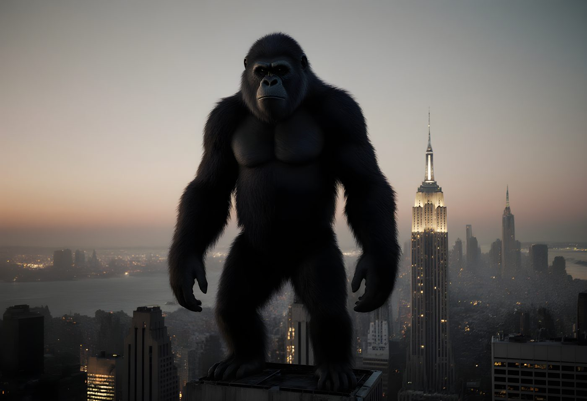
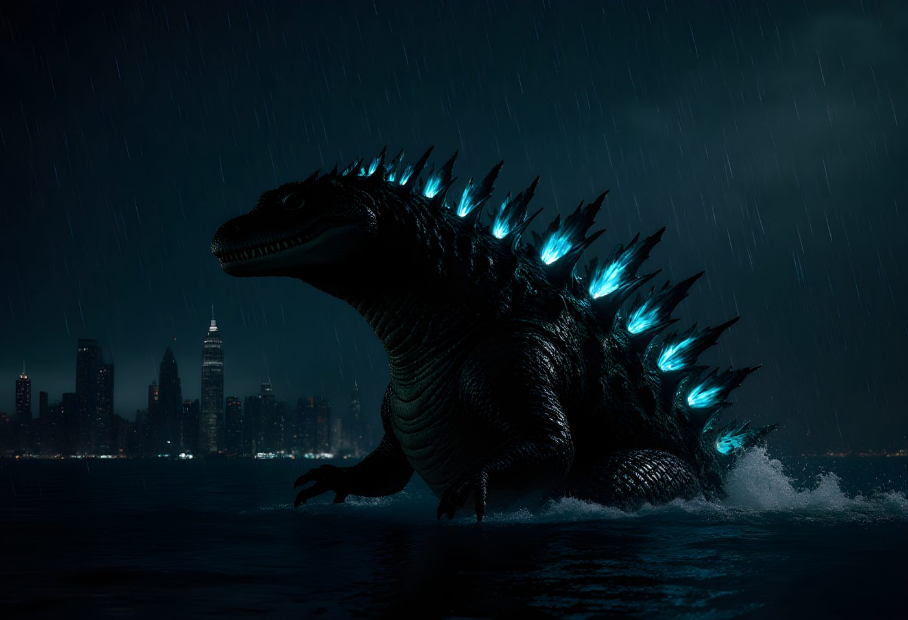
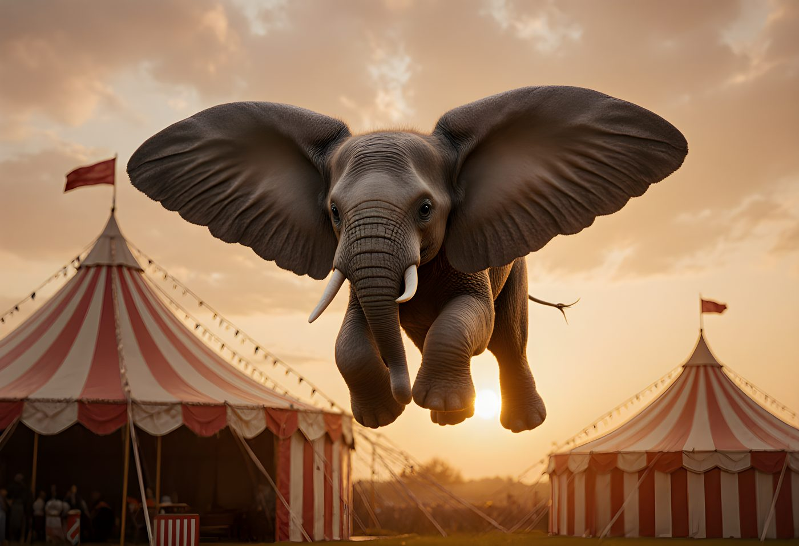
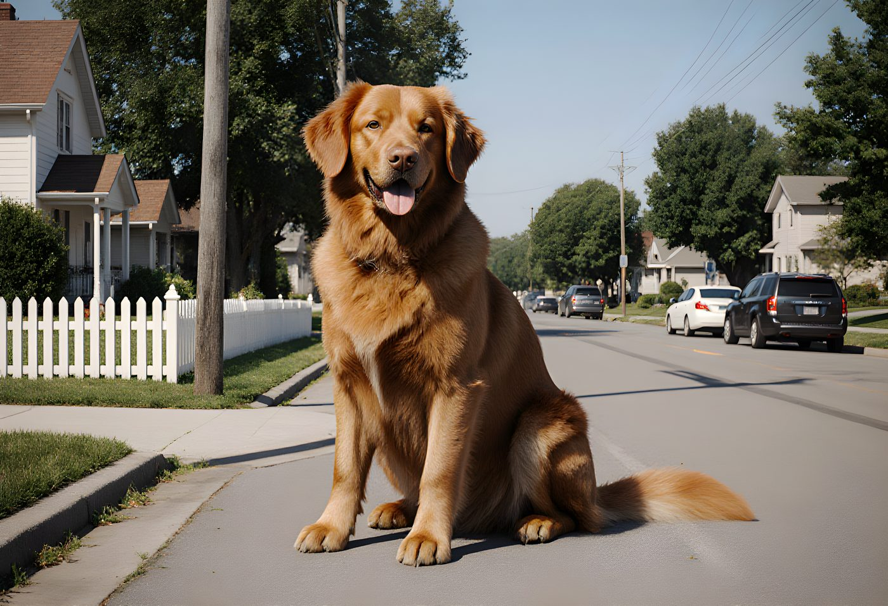
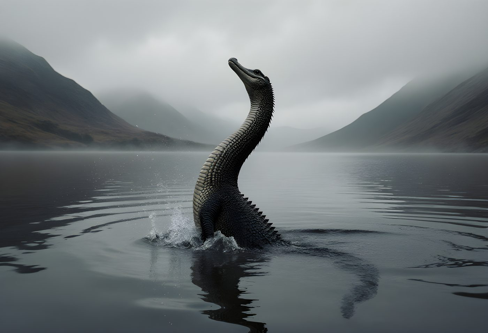
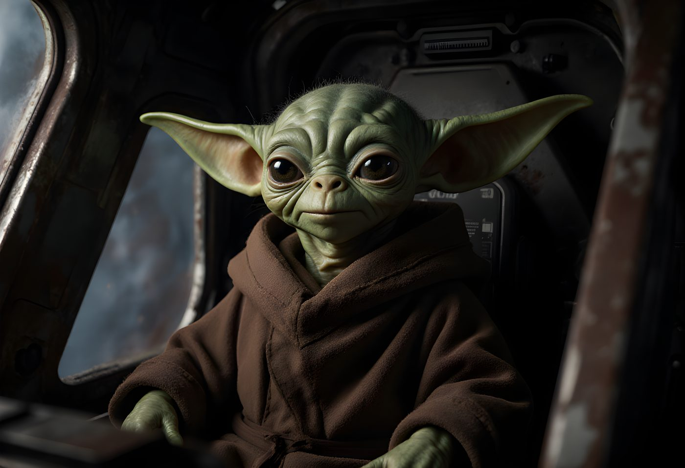

The rule is simple: it has to be a real, documented species — extinct or living, verified by actual science. Not a cryptid, not folklore, not an internet hoax someone dressed up with a blurry photo. Where a record is genuinely disputed between two legitimate contenders, this page says so rather than picking a winner and hiding the argument. Twelve records, twelve real animals, arranged in six axes — because every extreme is more interesting standing right next to its opposite.
_cropped.jpg)
Peregrine Falcon
In 1999, a captive-bred falcon named Frightful was released from a Cessna at 17,000 feet and clocked at 242mph in a hunting stoop — the fastest speed ever recorded for any animal, in air, on land, or in water. Wild birds get tracked well over 200mph doing the same thing: folding into a teardrop and dropping like a dead weight onto whatever's flying underneath them.

Garden Snail
About 1.3cm a second, riding a trail of its own mucus. The three-toed sloth is who people actually picture when they think "slow" — and it is the slowest mammal alive, at 0.15mph. But measured plainly, the garden snail is nearly five times slower again. Slowness, it turns out, doesn't need a face people find endearing.

Blue Whale
The largest animal confirmed to have ever lived — bigger than every dinosaur, including the long-necked giants that usually top these lists. Its heart alone weighs about as much as a small car, and a newborn calf gains roughly 90kg a day on milk.
Even this crown has a live challenger: in 2023, paleontologists described Perucetus colossus, an extinct whale known only from partial 39-million-year-old bones in Peru, estimated at up to 340 tons — heavier than any blue whale on record, though likely shorter. Genuinely unresolved. The blue whale keeps the title until someone finds the rest of the skeleton.

Etruscan Shrew
Lighter than a small coin, with a heart that beats over 1,500 times a minute just to keep its metabolism running. It has to eat close to twice its own body weight in insects every day or it starves by nightfall. Footnote: Kitti's hog-nosed bat is shorter nose-to-tail, so "smallest mammal" splits depending whether you're measuring length or mass — the shrew wins on weight, the bat on length.

Greenland Shark
A 2016 study radiocarbon-dated the eye lens of a captured female Greenland shark to roughly 392 years old, give or take 120 — meaning she was most likely alive before the microscope was invented. It's the oldest confirmed age for any vertebrate on Earth, and the species isn't thought to reach sexual maturity until around 150.
The "immortal jellyfish" doesn't belong on this list, tempting as it is — it doesn't grow old and outlast everything else, it resets, reverting to a juvenile polyp under stress. Different trick entirely; it's not clear it "lives" centuries so much as it declines to stop starting over.

Sand-Burrowing Mayfly
Adult mayflies have no working mouthparts — the entire adult stage exists to mate and die. Males of this species survive under an hour once they take wing; females get as little as five minutes to find a mate before they're gone. The twist: they spend up to two years as nymphs on the riverbed first. The lifespan isn't short. The party at the end just is.
.jpg)
Sperm Whale
Sperm whale echolocation clicks have been measured above 230 decibels — louder than any other sound produced by a living thing, and loud enough to stun prey outright at close range. For scale, a jet engine at close range is around 150dB; human eardrums rupture near 160.
Pistol shrimp are the mechanical runner-up: the snap of a single claw creates a collapsing bubble, cavitation, that hits roughly 210dB — a physical snap rather than a vocal sound, which is why it's judged in its own category rather than beating the whale outright.

Barn Owl
Not a decibel record like the whale's opposite number — a structural one instead. Serrated leading-edge feathers and a soft, velvety upper wing surface break up airflow before it can build into the whooshing sound every other bird makes in flight. The result is functionally silent flight, evolved for exactly one reason: so prey never hears the strike coming.

Little Brown Bat
Under actual EEG monitoring, not just time spent motionless, the little brown bat racks up more confirmed sleep than any other mammal studied: just under 20 hours a day, leaving under five for flying, hunting, and everything else. Koalas get cited more often for this title, at a claimed 18–22 hours, but a lot of that is torpor-like inactivity rather than measured sleep — softer science, better publicity.

African Bush Elephant
A 2017 study fitted actiwatches to wild elephant matriarchs in Botswana's Chobe National Park and found they slept as little as two hours a day, in four or five short standing bursts — less than any other mammal ever tracked in the wild. On at least one occasion, a tracked elephant went 46 hours with no sleep at all, covering nearly 30km, likely to avoid a threat.

Ants
A 2022 meta-analysis of 489 separate studies put the global ant population at roughly 20 quadrillion — about 2.5 million ants for every human alive — with a combined biomass greater than all wild birds and mammals on Earth put together. The researchers considered it a conservative floor; it barely accounts for ants living underground.

Vaquita
The world's smallest and rarest marine mammal, found nowhere but a single corner of the Gulf of California. The population has collapsed from roughly 567 in 1997 to somewhere between 7 and 10 individuals in the latest 2026 survey — a 98% decline in under thirty years, almost entirely to illegal gillnet fishing. The survey also recorded one or two calves, which is the only reason this entry isn't written in the past tense.
And for the famous animals that were never going to pass the "real, documented species" test no matter how hard we looked — rendered as if a nature documentary crew actually found them:

King Kong
A twenty-five-foot gorilla with a taste for aircraft and a worse one for skyscrapers. Disqualified on the "documented species" clause — also the "exists" one.

Godzilla
Two hundred feet of irradiated reptile, allergic to Tokyo. The most-filmed animal that was never once real.

Dumbo
An elephant calf who solved flight with ears alone. Aerodynamically nonsense; emotionally undefeated.

Clifford the Big Red Dog
A dog the size of a house, in a town that never once questions it. Best-behaved animal on this entire page.

The Loch Ness Monster
Ninety years of blurry photographs and zero specimens — the honourable mention that exists specifically to fail this page's own rule.

Grogu ("Baby Yoda")
Fifty years old, drinks bone broth, moves objects with his mind. Not a documented species by any definition, but nobody's arguing.